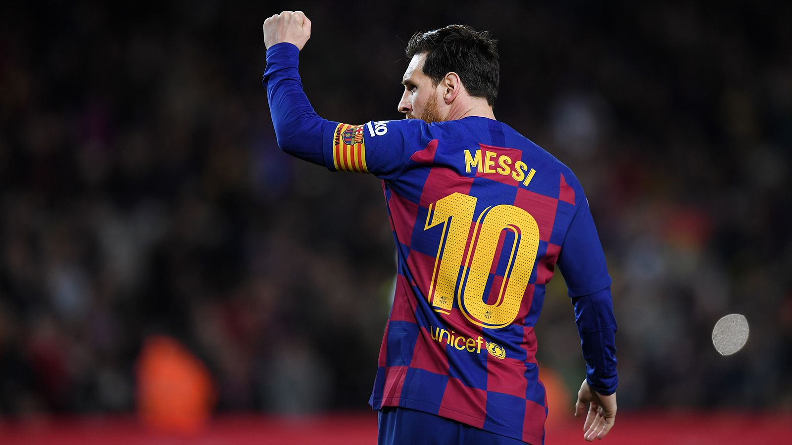

Джабджик - это порода Ярика
- Домен: Эукариоты
- Царство: Животные
- Тип: Хордовые
- Класс: Млекопитающие
- Отряд: Хищные
- Семейство: Кошачьи
- Род: Джабджуа
- Вид: Джабджа
Внешний вид
Окрас: сплошной серебристо-голубойю.
Хвост: небольшой, средней длины, сильный, с закругленным кончиком.
Глаза: большие, круглые, чуть выпуклые, зеленые или янтарно-зеленые.
Шерсть: короткая, тонкая, блестящая, подшерсток отсутствует, на спине при движении можно наблюдать «разломы».
Большие глаза
Прекрасные глаза